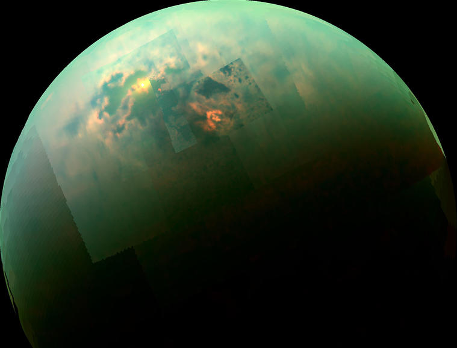

Satélites Naturais
Os satélites naturais são corpos celestes que orbitam planetas ou outros objetos maiores no espaço. Estes corpos variam muito em tamanho, composição e número, dependendo do planeta que orbitam. Enquanto alguns planetas, como Mercúrio e Vénus, não têm satélites, outros, como Júpiter e Saturno, possuem dezenas — alguns com características geológicas complexas e atmosferas próprias.
O estudo dos satélites naturais ajuda-nos a compreender melhor a formação e a evolução dos sistemas planetários, revelando pistas valiosas sobre o nosso próprio sistema solar e os exoplanetas distantes.
Titã
|
- Titã é a maior lua de Saturno e a segunda maior lua do Sistema Solar (depois de Ganimedes, de Júpiter).
- É única entre as luas do Sistema Solar por possuir uma atmosfera densa, composta principalmente por azoto (tal como a Terra), com vestígios de metano e outros hidrocarbonetos.
- A sua superfície esconde lagos, rios e mares de metano e etano líquidos, tornando-o o único corpo celeste conhecido, além da Terra, com corpos líquidos estáveis na sua superfície.
- A atmosfera de Titã é mais densa que a da Terra e tem uma pressão superficial cerca de 1,5 vezes a da Terra.
- As nuvens na atmosfera de Titã são compostas principalmente por metano.
- A atmosfera causa uma névoa espessa que dificulta a observação direta da superfície na luz visível. Grande parte do nosso conhecimento da superfície de Titã vem de missões espaciais que utilizaram radares e infravermelhos para a penetrar.
- A superfície de Titã é geologicamente ativa, com evidências de rios, lagos e mares de hidrocarbonetos líquidos, dunas de areia (feitas de grãos de hidrocarbonetos sólidos), montanhas de gelo de água e possível criovulcanismo (vulcões que expelem água líquida, amoníaco ou metano em vez de lava).
- Acredita-se que Titã tenha um núcleo rochoso, rodeado por camadas de gelo de água em várias fases, incluindo possivelmente um oceano de água líquida subterrâneo.
- Titã orbita Saturno a uma distância considerável, completando uma órbita em cerca de 15,9 dias terrestres.
|

|